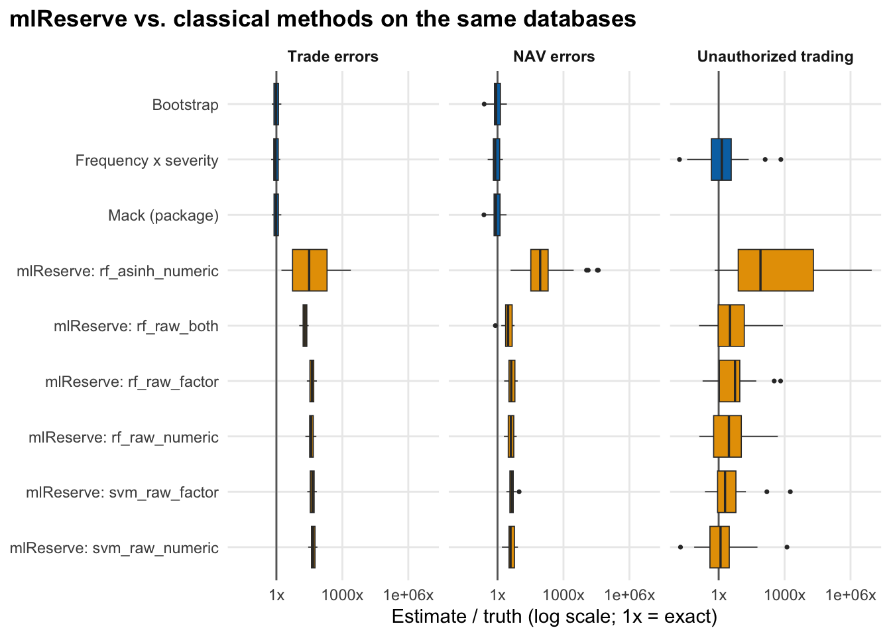

An experimental comparator, kept out of the main Results page because it does not feed the conclusions on the Overview.
WarningExperimental, excluded from headline results
mlReserve() comes from a personal fork of the ChainLadder package (thierrymoudiki/ChainLadder, pinned to commit 30cc7a84, package version 0.2.22), not from CRAN. Its published evidence is a blog post using simulated insurance triangles. It was installed into an isolated library so the CRAN ChainLadder used on every other page is unaffected. Nothing on this page feeds the executive summary.
What it does
mlReserve() fits a machine-learning regression (here a random forest from ranger or a support vector machine from e1071) to the observed cells of a triangle, using origin and development period as features, and predicts the unobserved cells. It is a different idea from chain-ladder’s multiplicative development factors.
The test
Same simulated databases as the baseline validation (replications 1-30), annual dollar triangles, scored on the undiscovered loss inside the window. Four configurations are run and all are reported; none was chosen using the true values. The first is the setting used in the blog post. Point estimates only (no bootstrap intervals).
How to read the table Each row is one setting of the machine-learning method: which learning algorithm, which inputs and whether the data were transformed first.
What the table tells you Six settings were tried and all are reported, including the setting used in the method’s published blog post, and none was chosen after seeing the true answer.
How to read the table Each block is an event type. “Median estimate / truth” shows how many times the true loss the method estimated in a typical database, so 1.00 is exact, 2.00 is twice too high and 0.50 is half.
What the table tells you On NAV errors the machine-learning settings are at best 3.0 times the truth, against 0.84 for the standard Mack method. For trade errors the best is 20 times, so the experimental method overstates the missing loss by large multiples where standard methods are accurate.
Code
cmp |>filter(is.finite(est), truth >0) |>mutate(ratio = est / truth, type =factor(type_lab[type], levels = type_lab),ml =str_detect(config, "^mlReserve")) |>ggplot(aes(ratio, fct_rev(config), fill = ml)) +geom_vline(xintercept =1, colour ="grey40") +geom_boxplot(outlier.size =0.6, linewidth =0.3) +facet_wrap(~type, nrow =1) +scale_x_log10(labels = \(x) paste0(x, "x")) +scale_fill_manual(values =c(`TRUE`="#E69F00", `FALSE`="#0072B2"), guide ="none") +labs(x ="Estimate / truth (log scale; 1x = exact)", y =NULL, title ="mlReserve vs. classical methods on the same databases") +theme_op()

Figure 1
How to read the plot Each box shows how far the estimate was from the truth across the simulated databases on a multiplicative scale: 1x is exact, 10x is ten times too high. Blue boxes are the standard methods and orange boxes are the machine-learning settings.
What the plot tells you The orange boxes sit far to the right of the blue ones for trade and NAV errors, so the experimental method consistently overstates. For unauthorized trading all methods are widely scattered, so the plot gives no reason to prefer the machine-learning approach there either.
Every mlReserve configuration overestimates on the two event types where classical methods work. For NAV errors the closest configuration (mlReserve: rf_raw_both) has a median estimate/truth ratio of 3, against 0.84 for Mack. For trade errors the closest (mlReserve: rf_raw_both) is 20x the truth, against 0.96 for Mack.
Why: on a single triangle, the learner extrapolates an upward trend across origin years into cells that, in this simulator, are nearly fully developed. With 10 origin years there are only 55 training cells and tree/kernel learners have no development-factor structure to anchor them.
The blog’s asinh transform, applied to dollar values, gives a median ratio of 31 for trade errors, worse than the same learner with no transform in the cases we ran; it may be calibrated for much smaller numeric scales, and we did not test rescaling the data first.
Unauthorized trading: the closest configuration (mlReserve: svm_raw_numeric, median ratio 1.3) is not a useful comparison either way, since the truth is small and the estimates are highly dispersed.
We report the configurations after the fact for transparency; none was selected using the truth, and “closest” above describes this experiment, not a recommendation.
Taken together, this is a limited test, on one data-generating process, with no tuning, of an unreleased fork. It gives no support for using mlReserve here, and it does not show that the approach cannot work with more data or tuning.